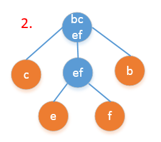
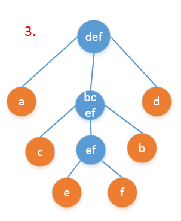
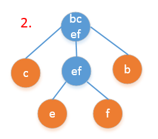
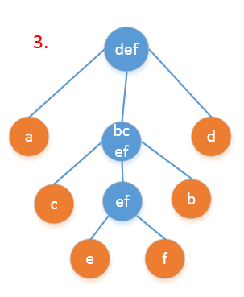

多叉树¶
记录不是二叉树的其他树型结构
1. 一般树¶
学习树结构的时候，做了大量二叉树的题目，了解了二叉树的表示结构和各种操作。但是当遇到普通的树的时候，一时竟不知道如何表示。其实树就是没有环的图。所以用来表示图的两种方法都可以用来表示一般的树结构。
1.1 表示¶
邻接表
用一个二维的数组(或者链表)表示每个节点的相邻的节点有哪些。
邻接矩阵
用一个矩阵表示哪两个节点之间直接相连。
1.2 应用¶
1.2.1 无根树化为有根树¶
将一棵树转换成以其中某个节点为根的树。
#include <bits/stdc++.h>
using namespace std;
const int maxn = 1005;
vector<int> v[maxn];
int n,rt;
int par[maxn];
void dfs(int x,int p)
{
par[x] = p;
for(int i=0;i<v[x].size();i++)
{
int toit = v[x][i];
if(toit!=p)
dfs(toit,x);
}
}
int main()
{
cin >> n >> rt;
int a, b;
for(int i=1;i<n;i++)
{
cin >> a >> b;
v[a].push_back(b);
v[b].push_back(a);
}
dfs(rt,0);
for(int i=1;i<=n;i++)
cout << par[i] << (i==n?'\n':' ');
return 0;
}
2. 霍夫曼编码¶
霍夫曼编码是一种无损编码方法，它是无损编码方案中最优的，基本思想是给出现频率高的字符以较短的编码，给出现频率低的字符以长的编码。本文将介绍霍夫曼编码的算法步骤和具体实现。
2.1 二叉霍夫曼编码¶
前缀码： 没有任何一个编码是其他编码的前缀，这样的一套编码体系叫做前缀码。例如a的编码是010，那么不会存在编码是0，01，0101，0100，010**的字符。前缀码确保了解码时的唯一性。
霍夫曼编码的算法步骤： 1. 统计每个字符出现的频率，按照频率从大到小排序。 2. 找到出现频率最小的两个字符，把这两个字符作为左右孩子，添加一个节点作为它们共同的父亲节点，父亲节点的值是这两个字符频率的和。 3. 重复步骤2直到总概率为1为之。 4. 以上步骤构造了一颗二叉树，二叉树根的概率是1.从根开始，递归的标记每个节点，左孩子标记为0，右孩子标记为1，直到到达叶节点。 5. 从跟出发到每个叶节点经过的0--1路径就是该字符的编码。
下面看一个具体的例子： 假设一个文件中只包含a,b,c,d,e,f六种字符，它们的出现频率如下表所示：
| a | b | c | d | e | f | |
|---|---|---|---|---|---|---|
| 出现次数 | 45 | 13 | 12 | 16 | 9 | 5 |
| 出现频率 | 0.45 | 0.13 | 0.12 | 0.16 | 0.09 | 0.05 |
第一步，找到频率最小的两个，应该是e,f,我们把e和f的根记作ef，这个时候构造了一个二叉树，二叉树的根是ef,频率是(9+5)/100 = 0.14.
 第二步，用ef代替e和f之后，继续寻找最小的两个节点，这个时候是b,c,我们把b和c的根记作bc,这个bc的频率是(12+13)/100 = 0.25.
第三步，继续寻找频率最低的节点，这个时候是d和ef. 我们把d和ef的根记作def,它的频率是(16+14)/100 = 0.3.
第二步，用ef代替e和f之后，继续寻找最小的两个节点，这个时候是b,c,我们把b和c的根记作bc,这个bc的频率是(12+13)/100 = 0.25.
第三步，继续寻找频率最低的节点，这个时候是d和ef. 我们把d和ef的根记作def,它的频率是(16+14)/100 = 0.3.
 第四步，继续寻找频率最小的两个值合并，这个时候是bc和def,我们记作bcdef,它的频率是0.55.
第四步，继续寻找频率最小的两个值合并，这个时候是bc和def,我们记作bcdef,它的频率是0.55.
 第五步，继续寻找频率最小的两个值合并，这个时候只剩下两个值了，就是a和bcde,它们和的频率是1.
第五步，继续寻找频率最小的两个值合并，这个时候只剩下两个值了，就是a和bcde,它们和的频率是1.
 可以看到，我们最终形成了一颗二叉树，调整一下位置，使之更好看一些。编号之后的情况是这个样子：
可以看到，我们最终形成了一颗二叉树，调整一下位置，使之更好看一些。编号之后的情况是这个样子：
 从中可以得到每个字符的编码：
从中可以得到每个字符的编码：
| a | b | c | d | e | f |
|---|---|---|---|---|---|
| 00 | 0100 | 0101 | 0111 | 01100 | 01101 |
这就是整个霍夫曼编码过程。除了使用二进制编码，其实还可以使用多种不同的进制编码，只要扩展分支的数目就可以了。
2.2 N叉霍夫曼编码¶
举例来说，还是上面的例子，如果编码的数字允许使用0，1，2三个数字。那么霍夫曼编码的步骤变为：
- 设字符数量为K，则第一次选择num =
K-2*[(K-1)/2],[]代表下取整的意思。这里K=6，所以第一次寻找2个频率最低的字符，e,f.如果num=0,取2，如果num=1,取3. - 把找出来的字符的概率合并作为新的一项加入到队列中，原来的删掉，继续用1中的方法寻找直到最后剩下三个为止。
具体到这个问题，具体的过程为：
 



 这个时候，得到的最优编码是：
这个时候，得到的最优编码是：
| a | d | c | b | e | f |
|---|---|---|---|---|---|
| 0 | 2 | 10 | 12 | 110 | 111 |
于此，我们可以很容易的推广到N叉霍夫曼编码，思想是一样的，都是贪心法和前缀码。
2.3 二叉哈夫曼编码的实现¶
下面给出二叉霍夫曼编码的C++实现的版本：
struct Node{
int label; // 节点的编码， 0 或者 1
char c; // 节点表示的字符
Node* left;
Node* right;
Node() : label(-1),left(nullptr), right(nullptr){}
Node(char cc) : label(-1), c(cc),left(nullptr), right(nullptr){}
Node(int la) : label(la),left(nullptr), right(nullptr){}
};
/**
* 输出字符的编码
* @param root
* @param s
* @param re
*/
void dfs(Node* root,string &s,map<char,string> &re){
if(!root) return;
if(!root->left && !root->right){
re[root->c] = s + to_string(root->label);
s.clear();
return;
}else{
s += to_string( root->label );
string s1(s);
string s2(s);
if(root->left) dfs(root->left,s1,re);
if(root->right) dfs(root->right,s2,re);
}
}
/**
* 哈夫曼编码
* @param source 每个字符出现的频率
* @return 每个字符对应的二进制编码
*/
map<char,string> huff(map<char,double> &source){
// 1. 初始化数据结构
multimap<double,Node*> tree;
for(auto iter : source){
Node *newNode = new Node(iter.first);
tree.insert(make_pair(iter.second,newNode));
}
// 2. 构建哈夫曼树
Node* newNode;
while( tree.size() > 1){
auto ff = tree.begin();
auto ss = ++(tree.begin());
newNode = new Node();
newNode->left = ff->second;
ff->second->label = 0; // 左子树编码为0
newNode->right = ss->second;
ss->second->label = 1; // 右子树编码为1
tree.insert(make_pair(ff->first+ss->first,newNode));
tree.erase(ff);
tree.erase(ss);
}
newNode->label = 0; // 根节点编码为0
// 3. 输出每个叶子节点的编码
Node* root = newNode;
string tmp = "";
map<char,string> re;
dfs(root,tmp,re);
return re;
}
import heapq
class Node:
def __init__(self, left=None, right=None, char=None, double):
self.left = left
self.right = right
self.char = char
self.double = double
def huffman(c):
"""
c: (double, char) 每个char出现的频率
"""
heap = heapq.heapify()
for char, double in c:
node = Node(char=char, double=double)
heapq.heappush(heap, [double, node])
while len(heap) > 1:
a = heapq.heappop(heap)
b = heaq.heappop(heap)
node = Node(double=a[0]+b[0])
node.left = a
node.right = b
heapq.heappush(heap, [a[0]+b[0], node])
root = heap[0]
return root